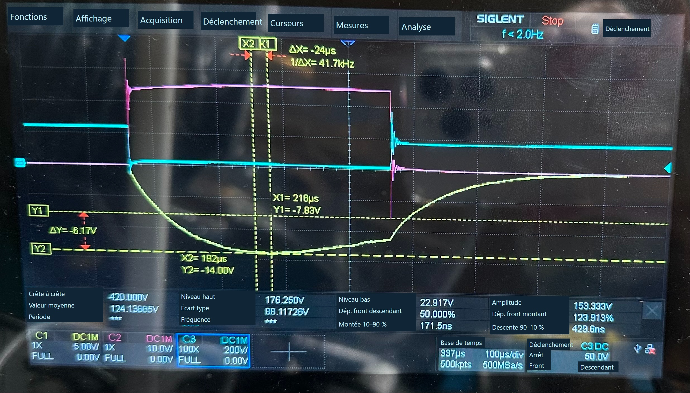
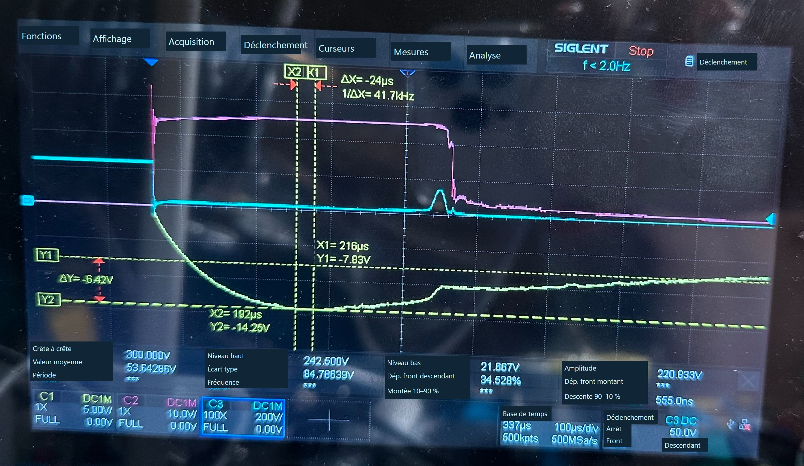
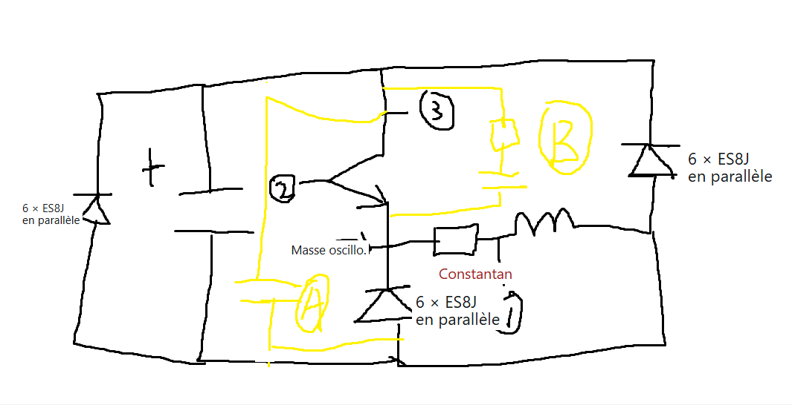
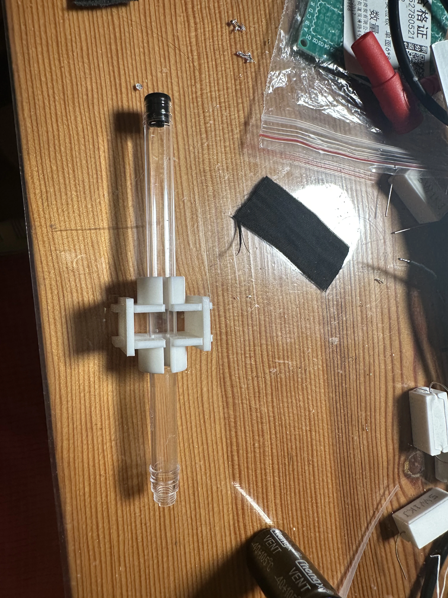
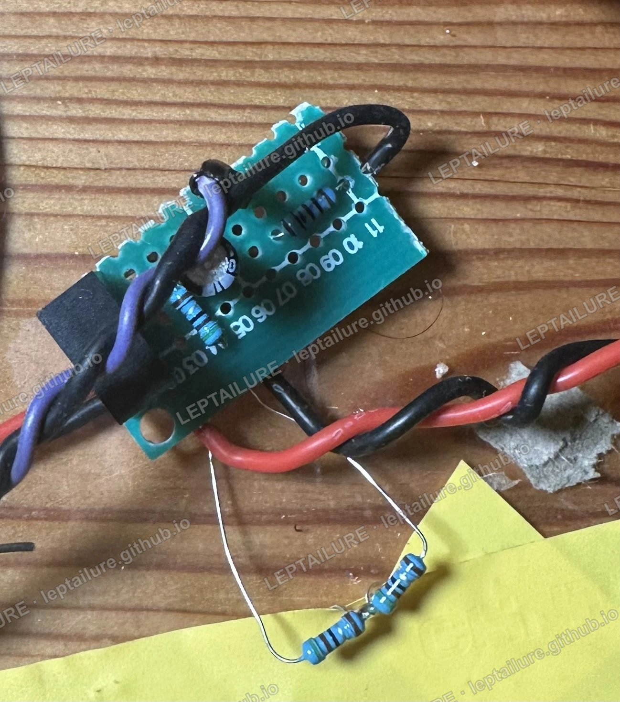

Électronique de puissance
IGBT DG340
Essais de courant impulsionnel
Étude expérimentale du DG340X08T6B sur charge inductive, dans le contexte de l’électronique de puissance pour véhicules électriques. L’essai relève le courant de crête de la bobine et les tensions de grille et de collecteur pendant l’impulsion.
Fiche technique DG340X08T6B (PDF)Courant de crête observé
La voie C1 mesure la tension aux bornes du shunt. La polarité de mesure donne une tension négative au pic. La loi d’Ohm donne la valeur absolue du courant avec la résistance nominale du shunt.
Icrête = |Ushunt, crête| / Rshunt, Rshunt = 5 mΩ = 0,005 Ω
Limite de fonctionnement observée sur ce banc : 2 800 A pour un temps de conduction de 400 µs. À ce point, la coupure et la décroissance du courant en roue libre sont visibles. À 2 850 A, l’IGBT a été endommagé. La capture ne montre ni coupure normale ni décroissance normale du courant en roue libre.
Ces valeurs caractérisent le courant de la bobine estimé à partir des captures et du shunt nominal. La fiche constructeur donne une limite absolue de courant collecteur impulsionnel de 680 A par IGBT, avec une durée d’impulsion limitée par la température maximale de jonction.
Essai 1 · −14,00 V sur C1


Essai 2 · IGBT endommagé (−14,25 V sur C1)


Montage d’essai
- Bobine
- 27 spires, en trois couches de neuf. Fil de bobinage rond en cuivre émaillé au polyuréthane, Ø 0,70 mm, grade 1 (QA-1). Pour la variante classe 130, la désignation française correspond à la famille de l’ancienne NF EN 60317-4 (référence internationale CEI 60317-4). La classe du fil utilisé reste à vérifier sur sa fiche fournisseur.
- Commande de grille
- Le microcontrôleur STM32F103C8T6 pilote l’IGBT par l’intermédiaire du photocoupleur de commande de grille TLP152.
- Diodes
- Chaque groupe de diodes représenté sur le schéma correspond à six ES8J en parallèle.
- Mesure du courant
- Shunt nominal de 5 mΩ en constantan.



Photos du banc et des composants





